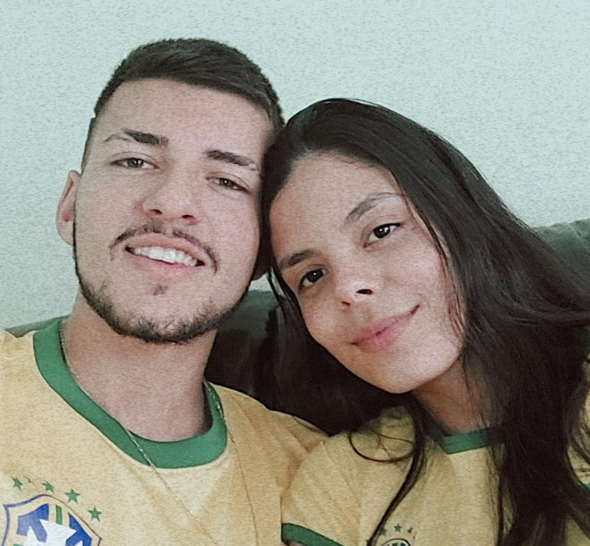
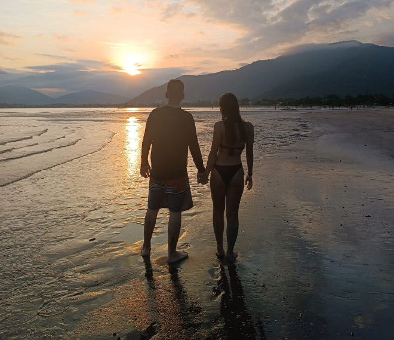

üíò 3 Anos de N√≥s üíò
É neném, hoje celebramos 3 anos desde o dia em que tudo mudou oficialmente em nossas vidas, foram 1095 dias de
amor, risos, aprendizados, aventuras e
muito carinho.
Cada segundinho ao seu lado valeu a pena, e este √© s√≥ o come√ßo de uma vida inteira juntos. üíë
Obrigado por cada sorriso, cada abraço, cada carinho, cada ensinamento, cada demonstração de amor e fidelidade,
cada gesto, cada coisinha que te faz ser tão √∫nica, maravilhosa e mais que especial pra mim.
Você é o
presente
mais lindo que a vida me deu, Papai do Céu me abençoou demais te colocando no meu caminho, ele sabia justamento
tudo que eu precisava e me presenteou com muito mais que um dia eu pedi a ele! üíñ
Fiz uma mini linha do tempo de uns momentinhos nossos, pra relembrar nossa trajetória até aqui, eu só tenho a
agradecer
por tudo que ja vivemos até hoje e tudo que ainda vamos viver!
O print
Lembra desse print que me mandou no dia 04/04/2022 ?
Poisé, por mais
simples que seja, ele me motivou muito a insistir em você e na gente, e com certeza valeu muito a pena! ❤️
O Início
Nosso primeiro "encontro", onde a indecisão nos levou a ir em um lugar que não
conheciamos e infelizmente a comida não foi boa como imaginavamos...
Porém tinha a sua companhia e foi
incrível pra mim simplesmente por isso, obrigado por transformar tudo pra melhor! ❤️
Primeira Aventuras
Obrigado por desde o inicio ser a minha companheira de aventuras
(menos de kamikaze :C) ❤️

Copa do Mundo
Obrigado por me permitir assistir a copa do mundo ao seu lado, mas
infelizmente não sermos campeões :c
Mas já estamos encaminhando para mais um copa juntinhos! ❤️
Calvice tem cura
Obrigado por me amar mesmo carequinha, bom que ja se prepara pro que
infelizmente virá futuramente kkkkk ❤️
1 ano
Obrigado por enfrentar tudo e todos nos primeiros 365 dias e
permitir comemorarmos nosso primeiro anos juntinhos. ❤️
Aliança
Obrigado por me dar a honra de colocar uma aliança de prata no seu dedinho para
selarmos nosso relacionamento, em breve será a de ouro para nos juntarmos pra sempre oficialmente... ❤️
O beijinho mais gotoso
Na sua boquinha, encontrei um lar, em um gesto simples que diz tanto sobre nós, que me faz me sentir
realizado e honrado por ter você junto de mim. ❤️
Você me faz tão bem
Você me faz tão bem neném, de uma forma que você nem imagina, eu
amo viver a vida ao seu lado! ❤️

Receitinhas
Obrigado por me ensinar a fazer o bolinho de churros, e por fazer tantas
outras receitinhas juntos! ❤️
Nem sempre dá certo kkkkk
Infelizmente nem sempre dá certo, mas mesmo assim fica uma
delicia
(sou apaixonado nessa fotinha, voxe ta linda demaisssss!) ❤️
Praia
Obrigado por me permitir ir ver o mar novamente depois de tanto e deixar o
momento mais especial pela sua presença! ❤️
Nossa cria
Obrigado por juntos adotarmos a nossa cria, essa neném tão especial pra nós
dois, que faz a minha vida mais feliz, agitada e com menos tempo dormido kkkkk ❤️
Amor verdadeiro
Obrigado por me proporcionar um amor puro e verdadeiro mesmo nos dias
de hoje nesse mundo doido! ❤️
Reveillon
Obrigado por tornar as minhas viradas de ano mais felizes, com mais amor,
alegria e felicidade! ❤️

A vida é boa
Obrigado por me mostrar o lado bom da vida, por ser a melhor parte da
minha vida! ❤️
Volei
Você é a minha companhia e minha jogadora de volei preferida!
Só a gente sabe do perrengue que foi pra
conseguir gravar essa cena de tão ruim que somos kkkk ❤️

2 anos
Quem diria que chegaríamos tão longe né, e mais uma vez comemoramos nosso
aniversario juntinhos, 2 anos de namoro oficiais e 2/2 desde que nos conhecemos, sem duvidas os melhores
anos da minha vida ❤️
Meu grudinho
Você é a melhor carona de quadriciclo desse mundãoooo, obrigado por viver
essas aventuras ao meu lado e confiar que o pai é piloto profissional kkkkk! ❤️
Player 2
Obrigado por ser a minha player 2 nas corridas de kart ❤️
Familia
Obrigado por juntos estamos construindo nossa familia, correndo atrás de nossos
sonhos e objetivos juntinhos! ❤️
Crianças
Obrigado por despertar a minha criança interior e ser a minha companheira de criancices! ❤️
Corridinha
Olha essa corridinha e a sua carinha acompanhando kkkkkk, voxe é minha vidaaaaaaaa! ❤️
Melhores risadas
Seu sorriso é meu remédio favorito neném, eu amo falar bobeiras e ser
bobão pra
tirar um sorrisinho que seja do seu rostinho, assim ja ganho meu dia! ❤️
Caminho do senhor
Obrigado por juntos estarmos seguindo o caminho do senhor e buscando
nos alimentar mais da palavra de Deus, você é tudo e muito mais que eu precisava, é a melhor coisa que ja me
aconteceu! ❤️
Princesa
Você é a minha princesa do sapatinho de cristal, meu sonho mais que realizado!
❤️
Garupa
Obrigado por ser a dona da minha garupa, por ser a minha casca de bala, por ser
besta igual eu e ficar dando tchau pros outros enquanto eu buzino kkkkkk ❤️
Colinho
Obrigado por ser a dona do colinho mais maravilhoso, onde eu me sinto 100% em
paz, sinto que é exatamente onde eu deveria estar! ❤️
Criança perdida
Voxe é a minha quiança perdida favolitaaaaaaaa kkkkkkk ❤️
Mulher da minha vida
Obrigado por ser a mulher da minha vida, por me completar e me
entender como ninguém, por ser a minha vida todinha, a mulher da/pra minha vida! ❤️
CLIQUE
Te amo infinitamente üíñ
Que venham mais capítulos dessa nossa história meu bem, que seja só mais um ano de todos os outros pelo resto de
nossas vidas, que possamos comemorar juntinhos nosso amor e união mais 10, 30, 50, 80 anos, que possamos
continuar lutando de mãozinhas dadas, enfrentando e vencendo todas as barreiras e adversidades!
Que Deus
continue nos abençoando e nos protegendo contra tudo e todos, nos fazendo invisiveis aos olhos do inimigos, nos
dando sabedoria, paciência e compreensão para lidarmos da melhor forma possível nos momentos difíceis, que
possamos estar pra sempre unidos, disfrutando do nosso amor e das nossas conquistas!
Que seja pra sempre
n√≥s at√© al√©m do infinito! üíò‚ú®